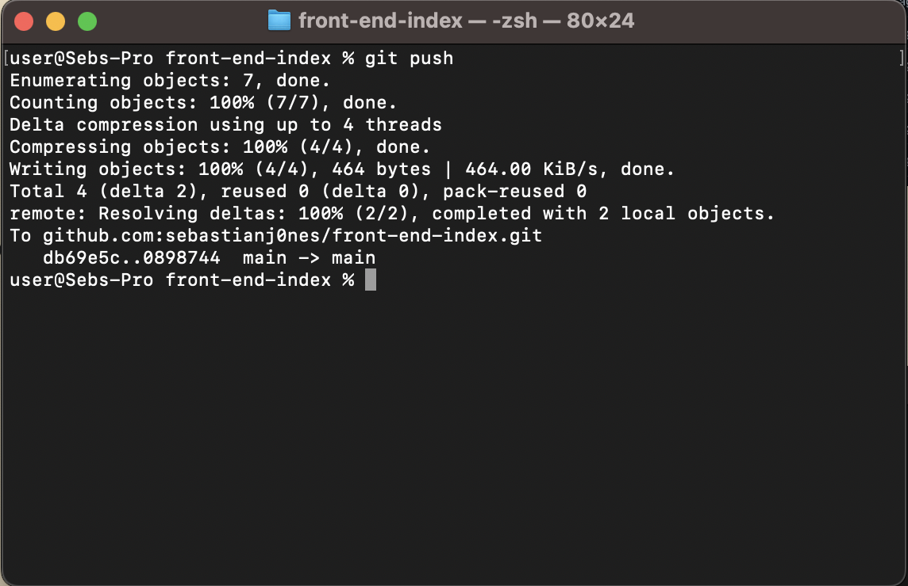

Git
Git
Git is the version control software, allowing savepoints to be made when developing code
Version control is helpful when developing code, especially in a team, to help prevent developers working on outdated code
Pushing Files
Pushing files, uploads the edited files to the repository.
Files must first be committed, with an appropriate comment.
In this example, I'll push a new "example" folder to the repository.
This is the repository without the folder.
However, this is how my local directory looks (notice it has an extra "example" folder)
The folder has been staged and committed, now ready to be pushed.
In the terminal type "git push"

The contents of the folder has now been pushed to the live repository.
The example folder can now be seen in the repository.